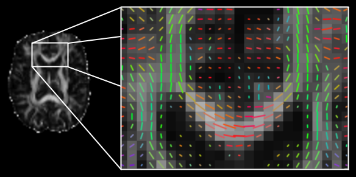

| Home | Contents | Downloads | Changelog | References | Mailing list |
Home
The TractoR (Tractography with R) project includes R packages for reading, writing and visualising magnetic resonance images stored in Analyze, NIfTI and DICOM file formats (DICOM support is read only). It also contains functions specifically designed for working with diffusion MRI and tractography, including a standard implementation of the neighbourhood tractography approach to white matter tract segmentation. A shell script is also provided to run experiments with TractoR without interacting with R. Using TractoR you can easily
- Convert DICOM files from your MR scanner to Analyze/NIfTI format.
- Preprocess diffusion MR data and calculate tensor metrics including fractional anisotropy (FA), mean diffusivity (MD), and principal directions (see diffusion processing).
- Run probabilistic tractography using single seed points or one or more masks.
- Segment specific tracts in groups automatically using neighbourhood tractography (see PNT tutorial and HNT tutorial).
- Remove false positive tracts using a model of tract shape variability.
- Create graphics to visualise image slices or maximum-intensity projections.
If you use TractoR in your work, please cite the reference below. For details of research papers underlying the methods implemented in the package, please see the references page. If you would like to hear about new releases and other TractoR-related news, we would suggest joining the users' mailing list. General queries or problems may also be raised there, while bugs and other specific issues may be reported using the GitHub issue tracker. Please describe any problem as fully as possible.
TractoR is developed primarily by Jonathan Clayden and colleagues at University College London, with contributions and collaborations from other groups.
Please note that TractoR is research software and has not been approved for clinical use. The software is provided in the hope that it will be useful, but comes with no warranty whatsoever.

Site contents
- The getting started page is the place to find out about downloading and installing TractoR. Details of the major user-visible changes in each release can be found in the changelog.
- Users of TractoR 1.x may find the information on upgrading to TractoR 2 helpful, and an addendum to the TractoR paper for version 2 is also available.
- There is specific information on TractoR for R users, and additional detailed information for anyone actually contributing to the project.
- Useful information about TractoR-specific conventions can be found on the aptly-named conventions page.
- The diffusion processing page covers the processing of diffusion-weighted MR images using TractoR.
- TractoR provides reference implementations of various neighbourhood tractography methods, both “heuristic” and “probabilistic”, for segmenting specific white matter structures. An HNT tutorial and a PNT tutorial using TractoR are available, as well as information on the reference tracts used by both methods.
- There is a specific page about the facilities in TractoR for handling DICOM files and, importantly, their limitations.
- Finally, there is a list of references for the methods available through TractoR.
Reference
J.D. Clayden, S. Muñoz Maniega, A.J. Storkey, M.D. King, M.E. Bastin & C.A. Clark (2011). TractoR: Magnetic resonance imaging and tractography with R. Journal of Statistical Software 44(8):1-18.